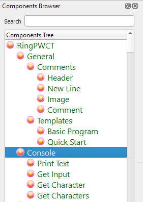
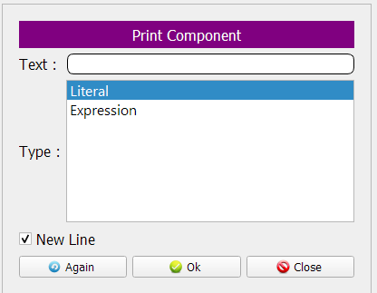
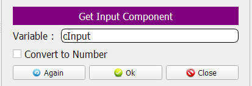
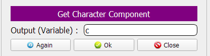
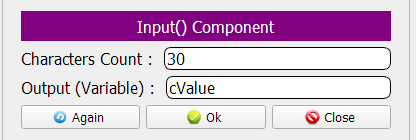

Console Components¶
In this chapter we are going to learn about the Console Components
Introduction¶
These components could be used for Input/Output operations in console applications
We have four components in this category:
Print Text
Get Input
Get Character
Input() Function
Print Text¶
Using this component we can print text on the screen
Also we can print the result of an expression
Get Input¶
Using this component we can get input from the User using the Keyboard
The entered text will be stored in memory
We can access this text later using the Variable Name
Get Character¶
Using this component we can get one character from the User using the Keyboard
The entered character will be stored in memory
We can access this character later using the Variable Name
Input() Function¶
Using this component we can get some of characters from the User using the Keyboard
The entered characters will be stored in memory
We can access these characters later using the Variable Name
